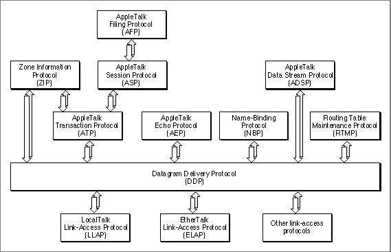
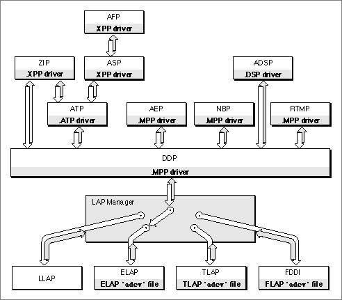

Legacy Document
Important: The information in this document is obsolete and should not be used for new development.
Important: The information in this document is obsolete and should not be used for new development.


The AppleTalk Protocol Stack
This section explains what an AppleTalk protocol is, then it provides a brief discussion of each component of the AppleTalk protocol stack, followed by a discussion of how the AppleTalk protocols are implemented in software drivers.This section also introduces the LAP Manager, multivendor support, and multinode architecture, which are components of AppleTalk, although strictly considered, they are not protocols.
To develop applications that use AppleTalk networking services, you don't need to understand how AppleTalk implements the protocols it supports. However, under-
standing the functions that each protocol provides will help you determine which application programming interfaces to use for your application.The AppleTalk system architecture consists of a number of protocols arranged in layers. The various AppleTalk protocols are sets of rules, not computer programs, and so can be implemented in many different ways on many different systems. All of the AppleTalk protocol functions that you can address or control from a Macintosh application are implemented as Macintosh device drivers or managers. Many other features of these protocols are implemented in software located only on internet routers that are not used to run general applications. Some parts of protocols are implemented by server software such as file servers or print servers.
When this book refers to a protocol as doing or controlling something, you should understand the statement to mean that some program that implements the protocol actually carries out the operation. Each protocol in a specific layer provides services to one or more protocols in a higher-level layer, which is then the client of the lower-level protocol. The higher-level protocol builds on the services provided by the lower-level one. Figure 1-2 on page 1-11 shows the AppleTalk protocols and how they relate to one another in layers. The following sections describe each protocol in turn, beginning with AFP, and progressing through the protocols as they appear in the figure.
Figure 1-2 AppleTalk protocol stack

AppleTalk Filing Protocol (AFP)
The AppleTalk Filing Protocol (AFP) allows a workstation on an AppleTalk network to access files on AppleShare file servers. When the user opens a session with an AppleShare file server over an internet, it appears to any application running on the workstation that uses File Manager routines as if the files on the file server were located on a disk drive connected to the workstation. The AFP protocol is not commonly used because the native file system commands allow users to access an AFP server, such as AppleShare, from a workstation. There is no server-based interface.The chapter "AppleTalk Filing Protocol (AFP)" in this book describes the application programming interface to the workstation implementation of AFP. For additional information about AFP, see "Accessing AppleShare and Other File Servers" on page 1-24.
Zone Information Protocol (ZIP)
The Zone Information Protocol (ZIP) provides applications and processes with access to zone names. Each node on a network belongs to a zone. Zone names are typically used to identify groups of nodes belonging to a particular department or area. ZIP allows applications and processes to gain access to
The chapter "Zone Information Protocol (ZIP)" in this book describes the ZIP application programming interface. For additional information about ZIP, see "Identifying Zones" on page 1-21.
- their own node's zone name
- the names of all the zones on their local network
- the names of all the zones throughout the internet
AppleTalk Session Protocol (ASP)
The AppleTalk Session Protocol (ASP) sets up and maintains sessions between a workstation and a server. ASP is an asymmetrical protocol in which one side of the dialog, the workstation client of ASP, initiates the session and sends commands to the other side of the dialog. A higher-level protocol that is built on top of the ASP server interprets and executes the command, and the ASP server returns a reply. ASP also provides a means by which the server can send a message to the workstation; for example, a file server can use this messaging system to notify all of the workstations that are using the file server that it is shutting down. ASP is used by the AppleTalk Filing Protocol to allow a user to manipulate files on a file server. Because ADSP provides socket clients at both ends of the connection with equal control, ADSP is more commonly used than ASP when a session protocol is required.The chapter "AppleTalk Session Protocol (ASP)" in this book describes the ASP applica-
tion programming interface. For additional information about ASP, see "AppleTalk Session Protocol" on page 1-22.AppleTalk Data Stream Protocol (ADSP)
The AppleTalk Data Stream Protocol (ADSP) is a connection-oriented protocol that supports sessions over which applications and processes that are socket clients can exchange full-duplex streams of data across an AppleTalk internet. ADSP is a symmetri-
cal protocol; the socket clients at either end of the connection have equal control over the ADSP session and the data exchange. Through attention messages, ADSP also provides for out-of-band signaling, a process of sending data outside the normal session dialog so as not to interrupt the data flow.The chapter "AppleTalk Data Stream Protocol (ADSP)" in this book describes the ADSP application programming interface. For additional information about ADSP, see "AppleTalk Data Stream Protocol" on page 1-21.
AppleTalk Transaction Protocol (ATP)
The AppleTalk Transaction Protocol (ATP) is a transaction protocol that allows one socket client to transmit a request that some action be performed to another socket client that carries out the action and transmits a response reporting the outcome. ATP provides reliable delivery of data by retransmitting any data packets that are lost and ensuring that the data packets are delivered in the correct sequence.The chapter "AppleTalk Transaction Protocol (ATP)" in this book describes the ATP application programming interface. For additional information about ATP, see "Performing a Transaction" on page 1-23.
AppleTalk Echo Protocol (AEP)
The AppleTalk Echo Protocol (AEP) exists on every node as a DDP client process called the AEP Echoer. The AEP Echoer uses a special socket to listen for packets sent to it from socket clients on other nodes. When it receives such a packet, the AEP Echoer returns it directly to the sender. A socket client can send a packet to the AEP Echoer on another node to determine if that node can be accessed over the internet and to determine how long it takes a packet to reach that node. There is no application programming interface to AEP. A socket client can send packets to an AEP Echoer socket on another node from a DDP socket, but it cannot access the AEP implementation directly.The chapter "Datagram Delivery Protocol (DDP)" in this book describes how to send packets to the AEP socket. For additional information about AEP, see "Measuring Packet-Delivery Performance" on page 1-24.
Name-Binding Protocol (NBP)
The Name-Binding Protocol (NBP) provides your application or process with a way
to map names that are useful to people using your program to numbers or addresses that are useful to computers. NBP associates a user-friendly three-part name that can be displayed to end users with the internet socket address of the application or process. When a user launches it, your application can register itself with NBP. When a user quits the application or when you no longer wish to advertise your application, your application can delete its entry from the NBP names table. Once your application registers itself with NBP, other applications can locate it.All applications and processes that use AppleTalk use NBP to make their services known and available throughout an AppleTalk internet and to locate other applications and processes in the internet. An application or process can use NBP to
The chapter "Name-Binding Protocol (NBP)" in this book describes the NBP application programming interface. For additional information about NBP, see "Making Your Application Available Throughout the Internet" on page 1-20.
- register itself with NBP. Registering an application or process with NBP makes that process a network-visible entity. (NBP lets your application or process bind a three-part name to its internet socket address.)
- look up or confirm the address of another application or process that is registered with NBP.
- remove its entry from the NBP names table when it no longer wants to advertise
its services.
Routing Table Maintenance Protocol (RTMP)
The Routing Table Maintenance Protocol (RTMP) provides AppleTalk internet routers with a means of managing routing tables used to determine how to forward a datagram from one socket to another across an internet based on the datagram's destination network number. The RTMP implementation on a router maintains a table called a routing table that specifies the shortest path to each possible destination network number. The AppleTalk protocol software in a workstation (that is, a node other than a router) contains only a small part of RTMP, called the RTMP stub, that DDP uses to determine the network number (or range of network numbers) of the network cable to which the node is connected and to determine the network number and node ID of one router on that network cable. There is no application programming interface to the RTMP stub; therefore, RTMP is not discussed in this book.Datagram Delivery Protocol (DDP)
The Datagram Delivery Protocol (DDP) is a connectionless protocol that transfers
data between sockets as discrete packets, or datagrams, with each packet carrying its destination internet socket address. DDP provides best-effort delivery. It does not include support to ensure that all packets sent are received at the destination or that those packets that are received are in the correct order. Higher-level protocols that use the services of DDP provide for reliable delivery of data. DDP uses whichever link-
access protocol the user selects; that is, DDP can send its datagrams through any type of data link and transport media.The chapter "Datagram Delivery Protocol (DDP)" in this book describes the DDP application programming interface. For additional information about DDP, see "Sending and Receiving Data as Discrete Packets" on page 1-23.
Link-Access Protocols
AppleTalk supports various network (or link) types and allows the user to select and switch among the types of networks to be used based on how the user's machine is configured; that is, if the machine has the proper hardware and software installed for a link type, the user can select that link. AppleTalk includes the link-access protocols for LocalTalk, EtherTalk, TokenTalk, and FDDITalk (Fiber Distributed Data Interface). AppleTalk uses connection files of type'adev'that contain software that supports a particular type of data link.To achieve link independence, AppleTalk relies on the Link-Access Protocol (LAP) Manager, which is a set of operating-system utilities, not an AppleTalk protocol. The main function of the LAP Manager is to act as a switching mechanism that connects
the AppleTalk link-access protocol for the link type that the user selects to both the higher-level AppleTalk protocols and the lower-level hardware device driver for that data link. From the Network control panel, a user can select which network is to be
used for the node's AppleTalk connection.The AppleTalk connection files of type
'adev'and the LAP Manager work together with the Network control panel file of type'cdev'. When the user selects a network type from the Network control panel, the LAP Manager routes AppleTalk communi-
cations through the link-access protocol for the selected network.The LAP Manager also provides an application with access to the AppleTalk Transition Queue. You can place an entry for your application in the AppleTalk Transition Queue so that the LAP Manager will notify you when an AppleTalk transition occurs or is about to occur. An AppleTalk transition is an event, such as an AppleTalk driver being opened or closed, that can affect your AppleTalk application.
The chapter "Link-Access Protocol (LAP) Manager" in this book describes the LAP Manager and the AppleTalk Transition Queue. For additional information about the
LAP Manager, see the Macintosh AppleTalk Connections Programmer's Guide.Multivendor Architecture
In addition to supporting various types of networks, Apple also provides what is known as multivendor support. The multivendor architecture allows for multiple brands of Ethernet, token ring, and FDDI NuBus\xC5 network interface controllers (NICs) to be installed on a single node at the same time. In addition to selecting the type of network connection, the user can now select a particular device to be used for the network connection. The chapter "Ethernet, Token Ring, and Fiber Distributed Data Interface" in this book describes multivendor architecture. Multinode Architecture
Multinode architecture is an AppleTalk feature that allows an application to acquire node IDs in addition to the standard node ID that is assigned to the system when the node joins an AppleTalk network. Multinode architecture is provided to meet the needs of special-purpose applications that receive and process AppleTalk packets in a custom manner instead of passing them directly on to a higher-level AppleTalk protocol for processing. A multinode ID allows the system that is running your application to appear as multiple nodes on the network. The prime example of a multinode application is Apple Remote Access (ARA). The chapter "Multinode Architecture" in this book describes this feature.How the AppleTalk Protocols Are Implemented
Above the data-link level, all of the AppleTalk protocols that you can address or control from a Macintosh application through a programming interface as well as multinode architecture are implemented as Macintosh device drivers. Table 1-2 identifies the AppleTalk drivers and the protocols they implement.Figure 1-3 shows the AppleTalk protocols with the name of the driver that implements the protocol and the connection files of type
'adev'that AppleTalk provides for various types of links. Notice how the LAP Manager acts as a switching mechanism between
the higher-level protocols and the link-access protocols. Many other features of these protocols are implemented in software located only on internet routers that are not used to run general applications. Some parts of protocols are implemented by server software such as file servers and print servers.Figure 1-3 Device drivers and connections files that implement AppleTalk protocols
